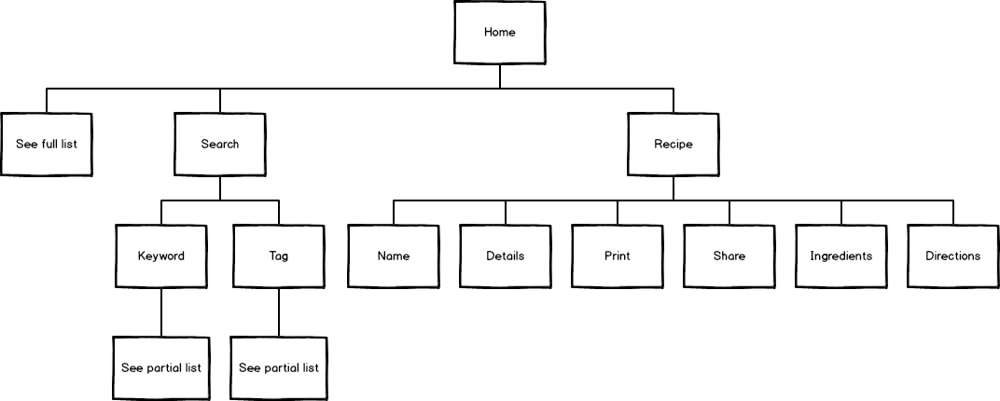
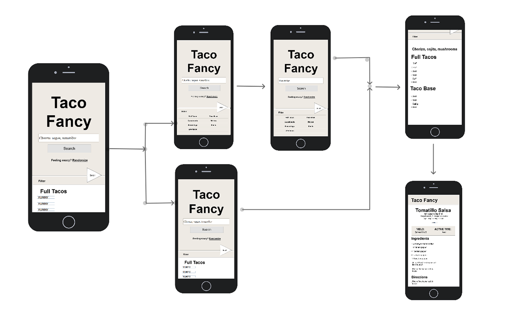
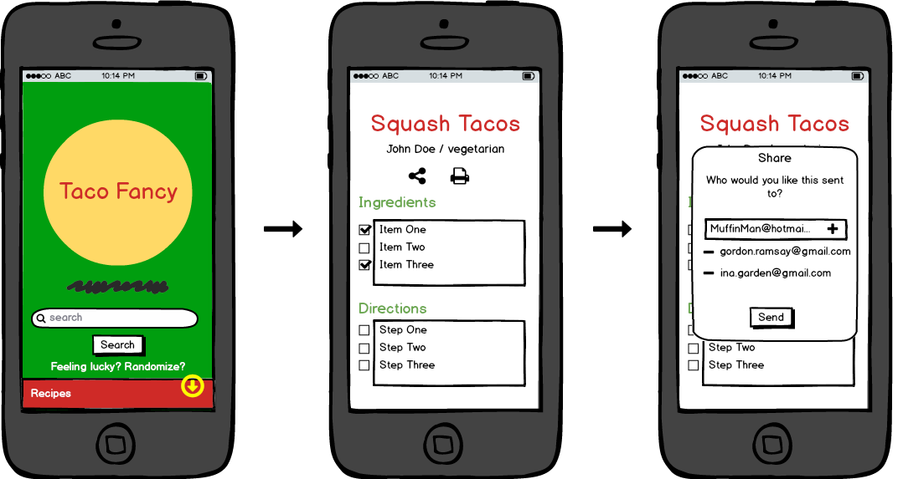
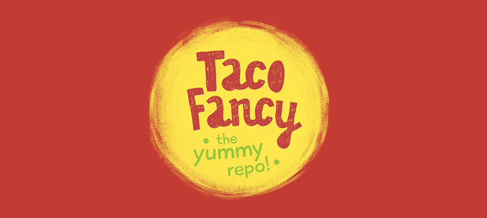
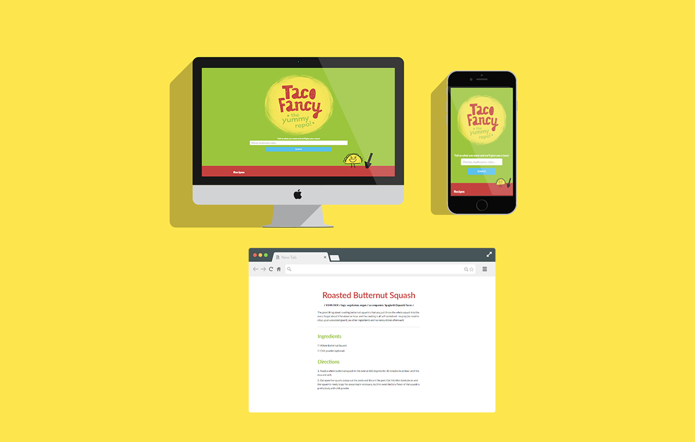

Background
Taco Fancy is this cool little repository on GitHub, a version control site for developers. Taco Fancy is esscentially an index of taco recipes and all the content is generated by good samaritans helping to build this resource. Taco Fancy is what is used in the early tutorials for GitHub and I figured a search option would be a great resource for home chefs and taco lovers alike.
I was inspired to create Taco Fancy when I decided to beef up my backend skills. A project born out of MEAN stack development, I'm using Angular for the frontend and Mongo for the database. Luckily there was a pre-exisiting API for the repo. For the frontend I'm using the grid from the CSS boilerplate: Skeleton, CSS, HTML5, and jQuery.
Design
I started with a basic IA to lay out the navigation and define what the website would do and wouldn't do.

Users will be able to search tacos by a full list, keywords, tags, or a randomize option. On the recipe pages, it will be populated by the name, contributor's credits (if available), tags, ingredients, instructions, check boxes, the ability to share and to print.

This app currently is not able to edit recipes, upload to galleries, rate recipes, and no main dish photo; these are not necessary to the function of the app.
The target user is 18-24, avid users of how-to's and digital instructables, has a wide range of dietary preferences, and can either be a novice or an amateur chef. For our User Persona, I've decided to call him Jeff
Jeff is a college freshmen and the number 1 fan of tacos. He's planning to cook dinner with his roommates tonight in their dorm and since he isn't much of a chef, he needs to find a quick recipe so he and his roommates can go get the ingredients.
- Open the site
- Randomize a recipe
- Check off a list for the ingredients he already has
- share the recipe with roommates so they can get the rest of the ingredients

Branding
For the logo of Taco Fancy, I wanted to do bright primary colors reminiscent of Mexico. I also wanted to have a more whimsical flair since it's such a light-hearted app. I created a circle with digital gouache and chose a chalky decorative type face. The yellow background of the logo represents a delicious (corn) taco.

Alongside the visual inspiration, I decided to add a cute little gaouche taco illustration to keep up visual cues to scroll down. There's a function navigation that gradiates in at a scroll point.
